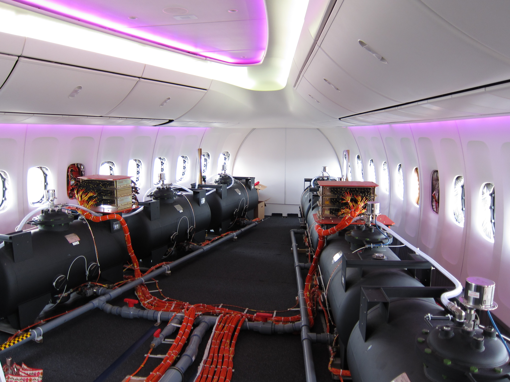

Versprüht die Regierung Chemikalien?
von Nikolas Grewe
Seit geraumer Zeit, um genauer zu sein in den 1990ern, kursiert eine Theorie über die uns allen bekannten Kondensstreifen der Flugzeuge: Sie sind nicht etwa Wasser und Eiskristalle, sondern Chemikalien. Auf Befehl der Regierung werden diese Chemikalien durch Flugzeuge verbreitet, unter anderem für militärische Zwecke, Geoengineering (Eingriffe in die Kreisläufe der Erde) oder eine Reduktion der Bevölkerung. Hierbei bleiben nahezu groteske Beispiele natürlich nicht aus.
Doch wie kommt solch eine Theorie überhaupt zustande? Die Grundlage dafür bietet eine Mutmaßung, die amerikanische Luftwaffe wolle Wetterbeeinflussungen und Kondensstreifen militärisch nutzen. Betonung liegt hier vor allem auf dem Wort Mutmaßung, da es bis heute keine Beweise für die Theorie gibt. Selbst in den eigenen Reihen gibt es Kontroversen: So ist man sich über die Zusammensetzung der Streifen nicht einig. Am meisten spricht man jedoch von Barium- und Aluminiumverbindungen. Dies unterstützt diese Theorie natürlich enorm.
Wie jedem, der mehr als 5 Jahre in der Schule war, klar sein sollte, entstehen Kondensstreifen in großen Höhen (8km und mehr) aus dem Wasser in der Luft. Die Rußpartikel in den Abgasen der Flugzeuge gelten sozusagen als “Sammelpunkt” für die Wassermoleküle. Diese resublimieren und bilden somit Eiskristalle. Es entstehen also künstliche Wolken.
Natürlich wurde diese Theorie nicht nur von der Regierung, sondern auch von unabhängigen Organisationen widerlegt. Und doch finden die Unterstützer dieser Theorie immer wieder Argumente. Dass diese ohne wissenschaftliche Beweise irrelevant sind, falls sie dies nicht sowieso sind, möge allen klar sein. So ist das Bild eines Flugzeugprototypen, welcher mit Wassertanks gefüllt ist, ein beliebtes Beispiel.
Ansonsten sind die “Beweise” von den Unterstützern nichts weiter als Annahmen und falsche Informationen. Während es sicherlich verdächtig erscheint, wenn diese Wolken lange Zeit an der Luft bleiben, gibt es auch dafür eine Erklärung: Je höher die Kondensstreifen sind, desto länger bleiben diese in der Luft, da die Eiskristalle langsamer schmelzen.
Aufgrund der mangelnden Beweise und den unklaren Behauptungen der Vertreter ist diese Theorie wohl kaum ernst zu nehmen. Nicht nur das, auch die Hypothesen zu den Chemtrails sind teilweise grotesk: So wurde behauptet, die Chemikalien werden benutzt, um die Wahlen zu manipulieren. Besonders bei den Wahlen um Trump soll dies eine grosse Rolle gespielt haben.
Fazit: Am Ende sind die Chemtrails eine weitere Verschwörungstheorie, welche trotz ihrer schlechten Argumente erschreckend viele Anhänger hat. Solch eine schlechte Informierung ist besonders jetzt, im Zeitalter des Informationsaustauschs, furchtbar traurig.